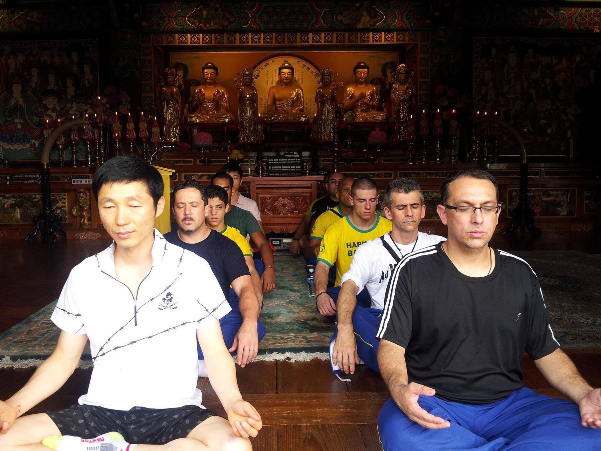
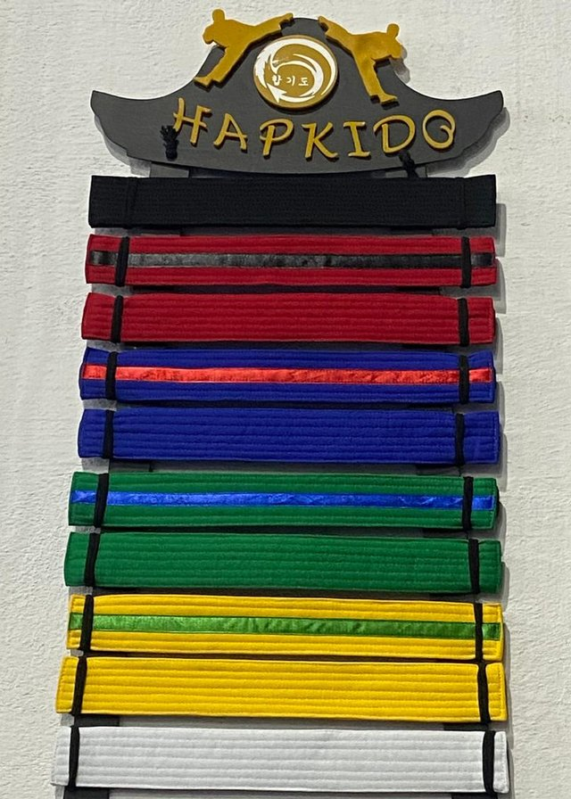

Antes de ensinar defesa pessoal, o Hapkido ensina disciplina. Cada faixa carrega responsabilidade — o primeiro passo de uma jornada que acompanha a vida inteira dentro da arte.
Para as crianças do Instituto, a prática esportiva é também formação: disciplina, organização, respeito e compreensão da hierarquia — valores que atravessam o tatame e chegam à vida fora dele.
Desde muito cedo, os pequenos do IBH aprendem que o dobok e a faixa carregam responsabilidade — o primeiro passo de uma jornada que, para muitos, começa na infância e acompanha a vida inteira dentro da arte.


Mais que técnicas de imobilização, o aluno aprende a controlar o impulso e agir com serenidade sob pressão — segurança que vem do domínio de si, não da agressividade.

Formas, filosofia e etiqueta do Hapkido coreano moldam respeito à hierarquia e senso de continuidade — valores que atravessam gerações dentro e fora do tatame.

Nos primeiros passos, a criança aprende disciplina, paciência e trabalho em equipe — a base de convivência que carrega para a escola, a família e a vida adulta.

A preparação para campeonatos ensina resiliência diante da derrota e humildade na vitória — o espírito esportivo que forma atletas e cidadãos.

Kyosanim e sabonim aprendem a liderar pelo exemplo — responsabilidade, escuta e compromisso com quem vem depois, formando não só faixas-pretas, mas referências.
Durante o Campeonato Mundial de 2013 na Coreia do Sul, em visita à academia do Mestre Ki Ho Kim, a equipe do IBH ouviu esta história num treinamento em sua academia — um ensinamento simbólico que se repete, de mestre para aluno, há gerações.

Branca
Segundo o mestre, a faixa não carregava, no início, o peso hierárquico que tem hoje — servia apenas para amarrar o dobok e manter a roupa no lugar durante os treinos. Por isso todo iniciante recebia a mesma faixa branca, de tecido simples: a cor representava a mente vazia, ainda sem nenhuma técnica, mas pronta para aprender.
Amarela
Com o passar das semanas, o suor dos treinos ia penetrando aos poucos naquele tecido claro, tirando-lhe a pureza inicial e deixando um tom amarelado — sinal de que o aluno já havia suado o bastante para começar a construir disciplina.
Verde
Os treinos, contava ele, não aconteciam sobre tatames como hoje, e sim direto na grama. O contato constante do corpo com o chão, os rolamentos e as quedas iam tingindo a faixa de verde — a marca de quem já não era mais um completo iniciante.
Azul
Conforme o treino ficava mais intenso, os primeiros hematomas apareciam, e a faixa ganhava um tom azulado: a fase mais dura, física e mental, de quem já enfrentava contato de verdade e persistia apesar da dor.
Vermelha
Para quem insistia ainda mais, os hematomas chegavam a se romper e sangrar, e o vermelho do próprio sangue passava a simbolizar aquele estágio final de superação — a última faixa antes da maturidade completa.
Preta
E era a soma de tudo isso — o suor, o atrito com a terra, os hematomas, o sangue, o tempo e a persistência — misturados ao longo dos anos, que resultava na cor mais escura de todas: não como um ponto de chegada, mas como a marca de tudo o que o corpo e o espírito atravessaram.

Na prática, hoje o Instituto segue essa mesma lógica de cores — mas com uma faixa de preparação, a "ponta", entre uma cor e a seguinte: branca, amarela, amarela-ponta-verde, verde, verde-ponta-azul, azul, azul-ponta-vermelha, vermelha, vermelha-ponta-preta e preta.